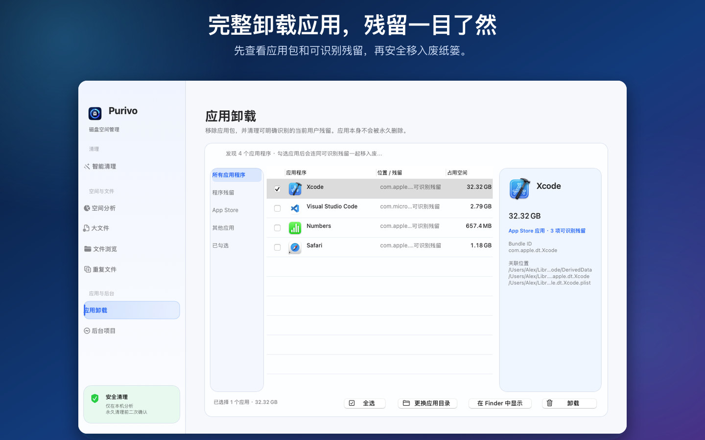
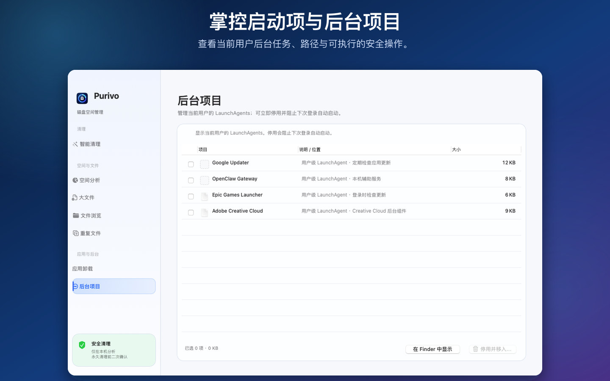

Smart Cleanup
Review caches, logs, temporary files, old downloads, and other cleanup candidates with risk-aware grouping.
Low → High risk智能清理
按风险查看缓存、日志、临时文件、旧下载等清理候选项，先分析，再确认。
低 → 高风险Purivo maps what is filling your Mac, explains what is safe to remove, and keeps every decision in your hands.
macOS 12+ · Apple Silicon & Intel · No account · No network activity
Purivo 帮你看清空间占用，解释哪些内容可以安全处理，并让每一步都由你确认。
macOS 12+ · 支持 Apple Silicon 与 Intel · 无账号 · 无网络请求
From everyday cache cleanup to developer-heavy machines, Purivo brings the tools together without hiding what will happen next.
从日常缓存清理到开发者机器维护，Purivo 把工具集中起来，并明确告诉你下一步会发生什么。
Review caches, logs, temporary files, old downloads, and other cleanup candidates with risk-aware grouping.
Low → High risk按风险查看缓存、日志、临时文件、旧下载等清理候选项，先分析，再确认。
低 → 高风险Find Xcode derived data, Simulator leftovers, Docker data, Node.js caches, and Homebrew residue.
Built for dev machines集中检查 Xcode 构建数据、Simulator 残留、Docker 数据、Node.js 缓存和 Homebrew 残留。
开发者专用Choose an app, inspect its bundle and recognizable user leftovers, then move the selected items to Trash.
App + leftovers选择应用后查看应用包和可识别的用户残留，确认后统一移入废纸篓。
应用包 + 残留Find duplicate content and rank the heaviest files, with previews and recoverable Trash actions.
Find space fast扫描重复内容并按大小排序，配合预览和可恢复的废纸篓操作快速释放空间。
快速找到占用Explore a visual map of file categories and drill from the overview into the folders that matter.
Visual storage map通过文件类型地图了解空间结构，从概览逐层深入到真正占用空间的目录。
可视化空间地图Review current-user LaunchAgents and disable selected startup tasks when the direct build has the needed access.
Startup control查看当前用户的 LaunchAgents；直装版具备所需权限时，可停用选中的启动任务。
启动项管理A visual map, large-file ranking, and Finder-style browser work together so every cleanup decision has context.
可视化空间地图、大文件排序和 Finder 风格目录浏览协同工作，让每一次清理都有依据。




Choose the Home folder or a specific directory in the standard macOS picker. The permission is saved as a security-scoped bookmark.
在 macOS 标准选择器中选择 Home 文件夹或具体目录，权限会保存为安全作用域书签。
Purivo analyzes locally and skips symbolic links, so the scan stays inside the scope you selected.
Purivo 在本机分析并跳过符号链接，扫描范围始终不会超出你的授权目录。
Review paths, sizes, and risk before moving selected items to macOS Trash. Nothing is permanently deleted by default.
查看路径、大小和风险后，再把选中的项目移入 macOS 废纸篓，默认不会永久删除。
Purivo does not collect personal data. Analysis happens inside the folders you authorize through macOS.
Purivo does not collect, store, transmit, or share file names, paths, sizes, metadata, scan results, usage analytics, or account information.
The Mac App Store build uses App Sandbox and the standard macOS folder picker. Purivo stores a security-scoped bookmark and works only inside that scope. The direct build may request native macOS authorization for protected app bundles.
Scanning never changes files. Selected files are moved to macOS Trash. Permanent cleanup requires an explicit confirmation and stays within the authorized scope.
Last updated: July 26, 2026
Purivo 不收集个人数据。所有分析都发生在你通过 macOS 授权的目录内。
Purivo 不会收集、存储、传输或共享文件名、路径、大小、元数据、扫描结果、使用统计或账号信息。
Mac App Store 版使用 App Sandbox 和 macOS 标准文件选择器。Purivo 保存安全作用域书签，只在授权范围内工作；直装版处理受保护应用包时可能请求 macOS 原生授权。
扫描不会修改文件。选中的文件只会移入 macOS 废纸篓；永久清理必须经过明确确认，并且严格限制在授权范围内。
最后更新：2026 年 7 月 26 日
The latest release brings the cleaner modules into one focused workspace, with a separate sandboxed Store build and a full direct-distribution build.
最新版本把完整清理模块集中到一个工作区，并区分沙盒上架版与功能完整的直装版。
Faster local scanning, refreshed navigation, clearer uninstall details, and region-based localization.
更快的本机扫描、更清晰的导航、完整卸载详情，以及按地区自动选择语言。
Mac App Store: sandboxed, user-selected folder access, no administrator escalation. Direct: full app manager access for protected bundles.
View on the Mac App Store ↗A few practical notes for getting the most from Purivo.
几条实用说明，帮助你更好地使用 Purivo。